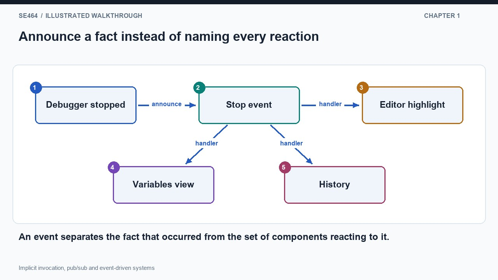
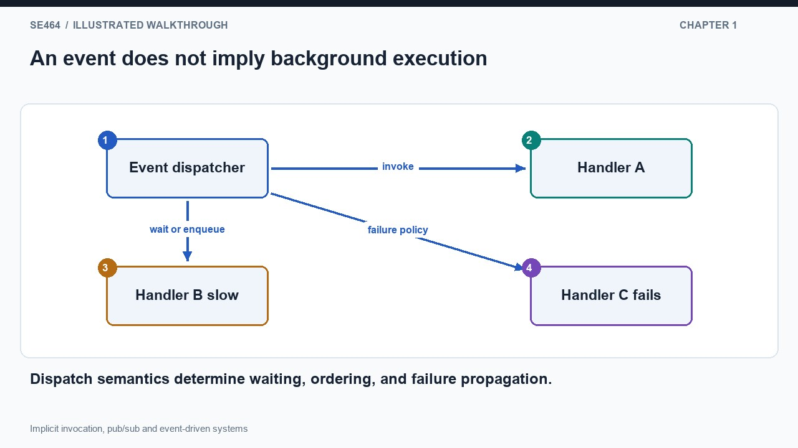
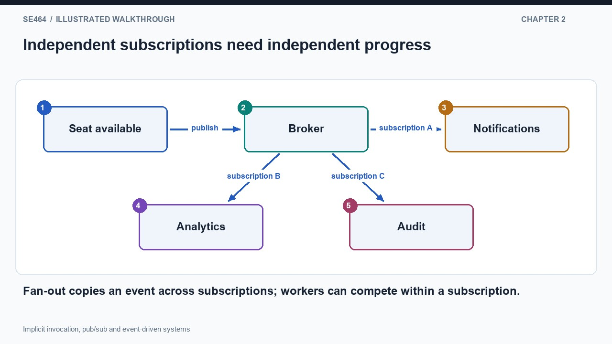
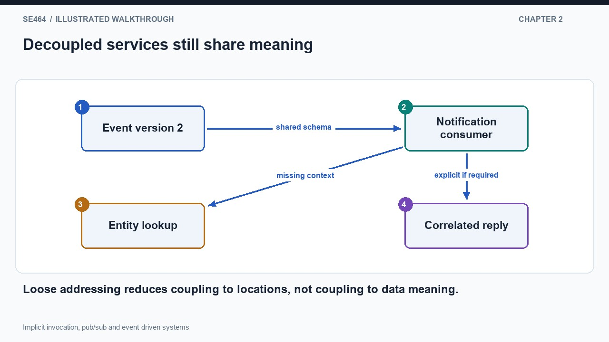
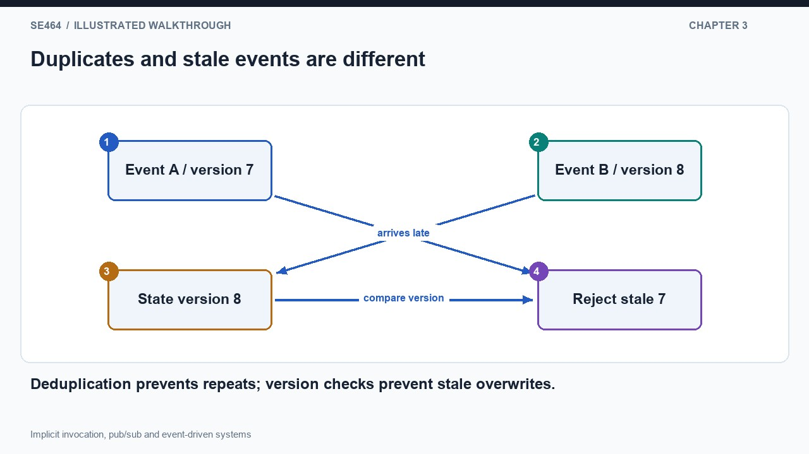
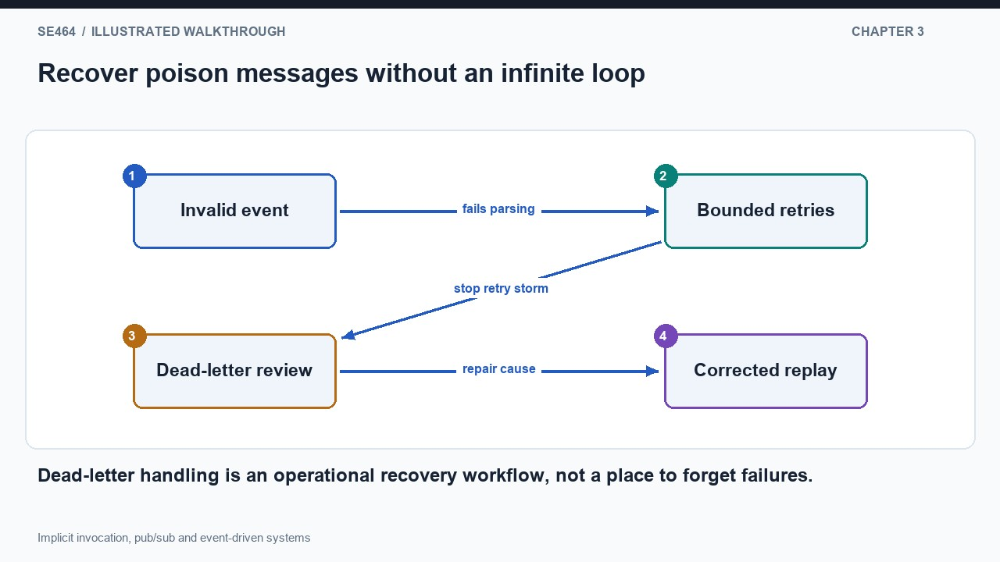
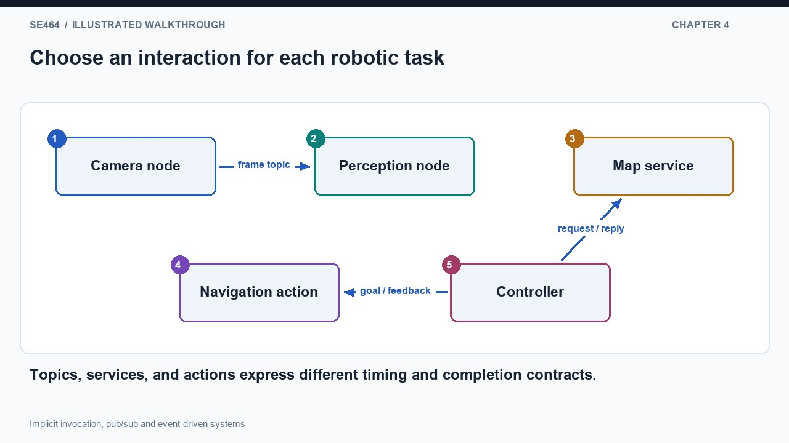
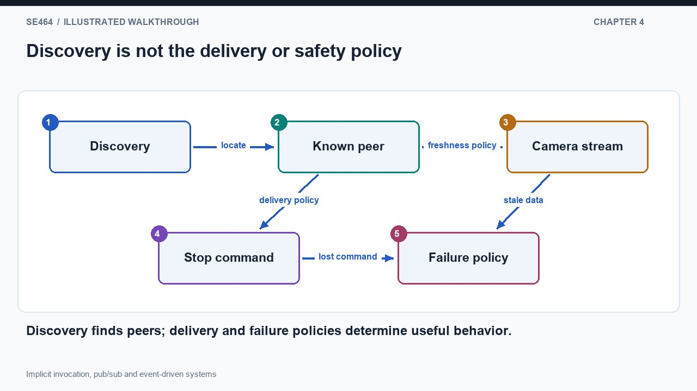

Design event subscriptions, brokered delivery and recovery, then examine the ROS example.
Imagine a debugger that stops at a breakpoint. A tightly coupled implementation calls the editor to highlight a line, calls the variables pane to refresh, and calls a history component to record the stop. Adding another view requires changing the debugger. With implicit invocation, the debugger announces that execution stopped and registered handlers decide how to react. The event carries enough context, such as the location and execution identifier, for each interested component. The producer now depends on the event contract rather than every view's implementation. Draw one event leaving the debugger and several reactions branching from it. This makes extension easier while preserving an explicit description of what happened and which information accompanies it.
With a direct call, the caller names the operation it wants another component to perform. With implicit invocation, a component announces an event and registered handlers react. A debugger can announce that execution stopped, letting an editor highlight source without the debugger depending on that editor’s implementation. The same idea supports user-interface observers and database triggers inside a single application.
The same event abstraction can run synchronously inside one process. Calling an event dispatcher may invoke every handler before returning, so a slow handler still delays the producer. A distributed broker often introduces asynchronous delivery, but that is a connector choice rather than a definition of events. Ask what happens when a handler fails, whether other handlers still execute, and whether ordering is guaranteed. Without those answers, the simple fan-out diagram hides control-flow obligations. A debugger extension that throws an exception should not accidentally prevent the editor from updating unless that behavior is intentional. Trace a failed handler through the dispatch semantics and document the result; modularity requires a predictable interaction contract as well as separate components.
The connector determines dispatch semantics. An in-process event can invoke handlers synchronously, while a distributed event bus often delivers asynchronously. A publisher should not assume which subscribers exist or that they finish in a particular order unless the contract explicitly provides it. This enables extension and replacement, but makes the full chain of effects harder to see during debugging and error handling.


No. A local connector can invoke handlers synchronously; distributed messaging is one specialization.
When a course seat becomes available, a registration system can emit one event. A notification subscriber alerts waiting students, an analytics subscriber updates demand statistics, and an audit subscriber records the change. If all three need the event, they require independent subscriptions or equivalent fan-out semantics. Three competing workers sharing one work queue would instead divide the messages, so some reactions would never happen. Within the notification subscription, multiple workers can share the delivery workload. Draw these two levels separately: copies across responsibilities, competition within one responsibility. This distinction explains why the words producer and consumer do not by themselves tell you whether every service sees every event or whether each event goes to just one worker.
An event describes something that happened, such as a seat becoming available. Consumers can react independently: notify a student, update a dashboard or record an audit trail. A publisher-subscriber intermediary routes events to interested subscriptions, reducing the producer’s need to track every consumer address. Topics and filters let consumers select relevant changes without requiring a new direct integration for each interested service.
Suppose the seat event contains only a course code. A notification consumer may need to query another service for the section and availability version before it can act. Including more facts reduces that dependency but can increase payload size, privacy exposure, and schema evolution work. There is no contract-free event bus: every consumer relies on the meaning of fields and on rules for missing or changed fields. Use identifiers and versions to distinguish the event from the current entity state. If a requester requires a specific reply before proceeding, represent that obligation with correlation and a reply path. Hiding a required response inside an event does not remove the dependency; it only makes that dependency harder to observe and diagnose.
Decoupling does not erase contracts. Event fields, identifiers, versions and authorization rules remain shared responsibilities. Separate subscriptions can maintain their own progress, while competing workers within one subscription may share its load. Request/reply communication needs correlation identifiers and an explicit reply path when a caller requires a specific result. Choose that pattern deliberately rather than hiding a mandatory synchronous dependency behind an event.


No. They need independent subscriptions or equivalent fan-out so each receives the event stream.
Consider two events for a shipping address: version seven sets one address and version eight replaces it. A handler can deduplicate repeated event identifiers and still get the wrong result if version seven arrives after version eight with a different identifier. Record or compare the entity version when applying a change, or choose an ordered processing scope that preserves the required sequence. Idempotency answers whether the same logical event produces an extra effect; ordering answers whether different valid events produce the correct final state. Draw both the event identifier and entity version in a worked example. This prevents a common reasoning error where a system is called reliable simply because duplicates are ignored while stale updates can still overwrite newer information.
Subscribers must plan for duplicates, failures and delayed delivery. An idempotent handler prevents repeated execution from creating an extra effect, but it does not make out-of-order changes safe. Include entity versions or process related events in an ordered partition when sequence matters. A priority queue changes which message runs first; it is not a substitute for preserving business-event order.
A subscriber receives an event it cannot parse because a required field has an unexpected format. Immediate unlimited retries cannot repair that message and can crowd out valid work. After a bounded retry policy, move it to a dead-letter workflow that preserves the payload, failure reason, and diagnostic context. An operator or repair process can correct the cause and replay deliberately. Some messages should instead expire: an alert that a pickup is arriving may be useless hours after the trip ended. Each subscription needs its own lag monitoring because analytics may tolerate delay that notifications cannot. A successful publisher acknowledgement therefore says little about every downstream result. Observe progress and failure at the consumer responsibility where the useful effect is supposed to occur.
Repeatedly failing messages need bounded retries and a dead-letter workflow with diagnosis and controlled replay. Expiry prevents obsolete work from consuming resources, while scheduled availability postpones otherwise valid work. Monitor each subscription’s lag so one slow consumer is visible without blocking all others. Eventual consistency is an application choice with limits, especially when a stale view can authorize an irreversible action.


No. Duplicate safety and ordering are different; compare versions or enforce the required sequence.
A robot camera produces frames continuously, so a topic is a natural way to let perception and visualization subscribe independently. Asking for the current map is closer to a request with a result. Asking the robot to navigate to a destination is a longer goal that benefits from progress feedback and cancellation as well as a final outcome. These are different interaction contracts even if all are implemented with messages underneath. Draw the camera stream, map request, and navigation goal as different connectors between nodes. A single generic message arrow would conceal timing and completion expectations. Typed interfaces help components evolve independently, but the architect still has to choose what data and lifecycle each interaction promises.
The robotics example organizes computation into nodes with typed messages. Topics carry streams such as sensor readings, services provide request-and-response interactions, and actions support longer goals with progress and a final result. These interfaces let sensing, planning, control and visualization evolve separately while still communicating through explicit data contracts suited to their interaction patterns and timing needs.
Knowing that a camera node exists does not establish which frames must be retained, how quickly a controller needs them, or what to do when communication stops. A stale image and an emergency-stop command have different consequences, so their delivery and timing policies should not be copied blindly. The centralized registration component in the historical ROS 1 example illustrates naming and discovery; a different version can use a different discovery architecture while preserving the modular node idea. Keep these concerns separate in the diagram. After discovering a peer, a component still needs compatible interfaces, an appropriate communication policy, and defined failure behavior. For safety-related control, a communication abstraction alone is insufficient evidence that the complete system will meet its timing and safety requirements.
The central ROS Master in the slides describes ROS 1 naming and registration. ROS 2 commonly uses middleware discovery rather than that same central master architecture. Do not transfer every topology assumption across versions. A robot also requires deliberate delivery and timing policies: a fresh camera frame and an emergency stop do not have identical needs. Pub/sub modularity helps composition but does not establish safety by itself.


An action interface better expresses goal, feedback, cancellation/status and result; topics still carry ongoing observations.
Independent subscriptions each receive relevant events; competing workers share processing within a delivery group or queue.
Someone or some process must diagnose, correct and safely replay or discard the isolated message.
A topic suits continuous observations; an action suits a goal with feedback and result.
Design enrolment events consumed by email, analytics and a seat-count projection. Include one poison-message scenario.
Publish a versioned event with unique ID and course/student identifiers after durable enrolment. Use separate subscriptions; email deduplicates, analytics tracks progress, and the projection enforces entity order/version. Retry transient failures with limits; isolate an invalid schema message, alert, repair and replay safely.
Questions-only worksheet · Worked answer sheet
A desktop mapping tool announces “route changed” through a synchronous in-process event connector. A newly installed statistics plugin takes three seconds to upload data whenever it receives the event. Dragging a route now freezes the user interface, although the route planner never names that plugin directly. Statistics may be delayed or lost, but route interaction must remain responsive. Which change best matches these requirements?
Best answer: D.
Move the optional statistics work to a bounded asynchronous handoff outside the UI call stack, with a drop or coalescing policy appropriate to noncritical telemetry. Keep essential route validation on a clearly defined synchronous path if it must complete before display. Registration-based coupling does not guarantee asynchronous execution: the connector currently invokes the plugin inline. An unbounded background queue would avoid the immediate block but could create a memory problem during prolonged network failure, so the resource limit belongs in the design.
Implicit invocation describes how handlers are selected, not whether callers wait. Timing and buffering policies must be explicit.
A building-management publisher emits TemperatureMeasured events with sensorId and value, historically understood as Celsius. A new sensor vendor sends Fahrenheit, and one team proposes changing the meaning of value without changing the event name. Three independently deployed subscribers control displays, archives and heating recommendations. Design a compatible event evolution and rollout plan, including what an old consumer should do with an unknown unit or schema.
Preserve the original contract while introducing an explicit unit and schema version, or publish a new versioned event type if older consumers cannot safely ignore additions. Normalize measurements at a defined boundary or require each compatible consumer to convert using the declared unit. Roll out support before switching producers, test with recorded examples and monitor rejection rates. Unknown versions or units should be quarantined or rejected visibly rather than guessed. Avoid sending two versions into the same aggregate without deduplication, because dual publication can double-count a measurement.
Independent deployment requires semantic compatibility, not just syntactic validity. Versioning must include migration and duplicate behavior.
A retailer retains OrderDispatched events for ninety days. After discovering an analytics bug, engineers want to replay the last month to rebuild a dashboard. The same event type also drives customer text messages, and customers must not receive another dispatch alert during the repair. Explain how subscription progress and consumer design can isolate the replay. Include what happens if the live messaging consumer itself receives a duplicate.
Create an isolated replay consumer or subscription with its own starting position and write a replacement analytics projection. Do not reset the live notification subscription’s progress. Validate the rebuilt result, catch it up and switch dashboards deliberately. The messaging consumer should separately remember a durable notification identity or use an idempotent delivery boundary so normal duplicate events do not cause repeat alerts. Replaying retained data is useful precisely because independent consumers can maintain different progress; it does not imply that all external side effects are safe to repeat.
Retained events support reconstruction, but replay scope and side-effect suppression are consumer responsibilities.